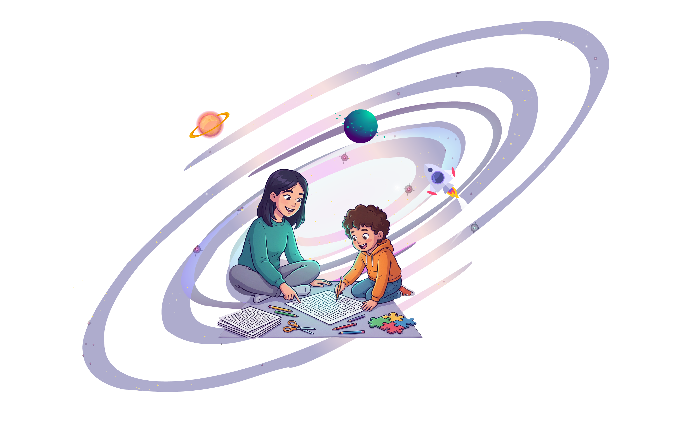

Smart Fun for Every Age
Anytime, Anywhere
Jokerian brings back real, screen-free entertainment through joyful, beautifully designed books, games and puzzles crafted with love to spark curiosity and smiles.
